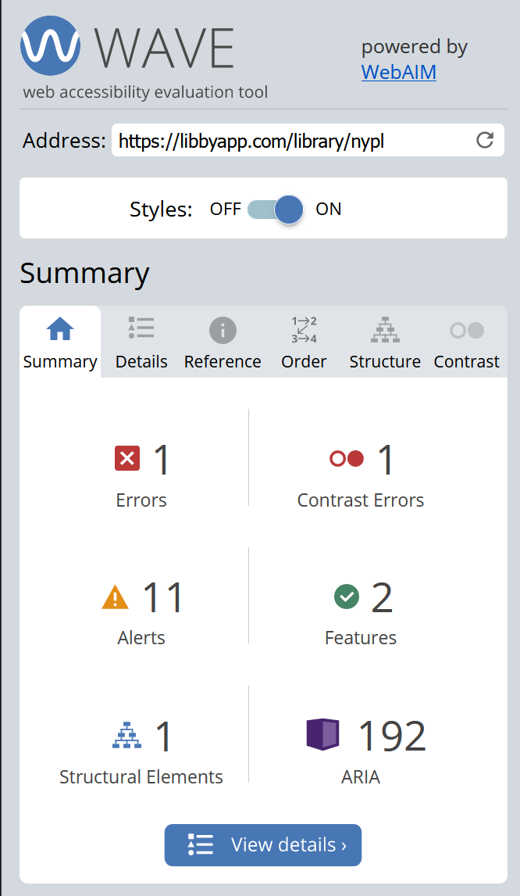
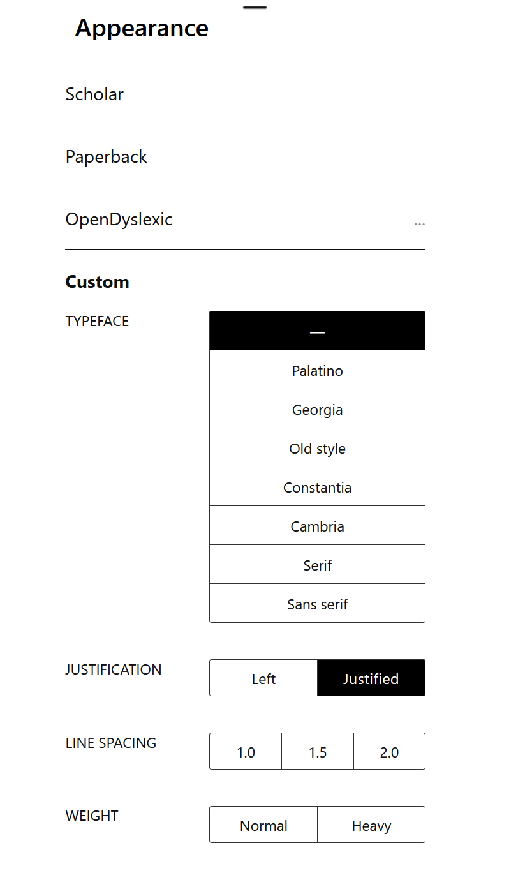
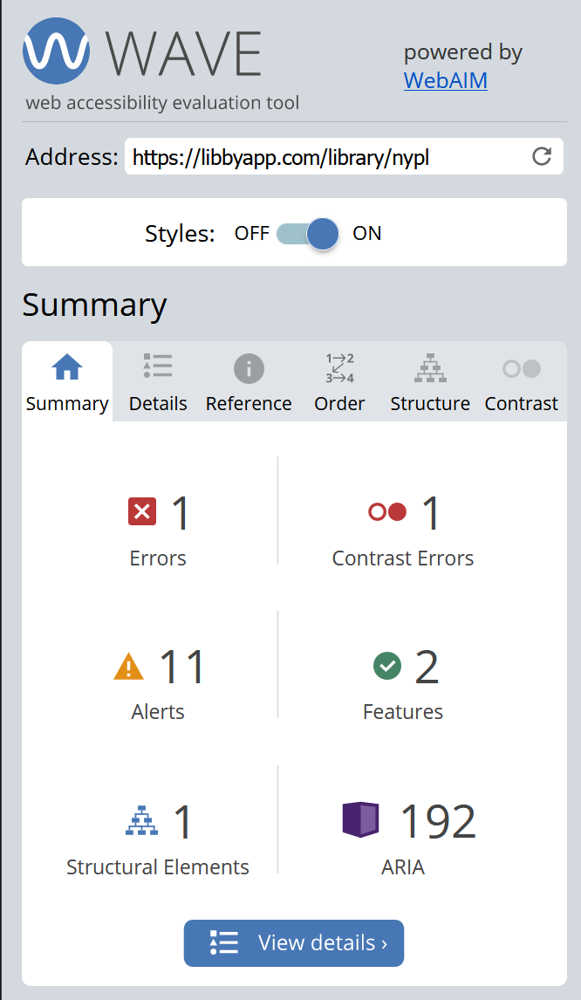
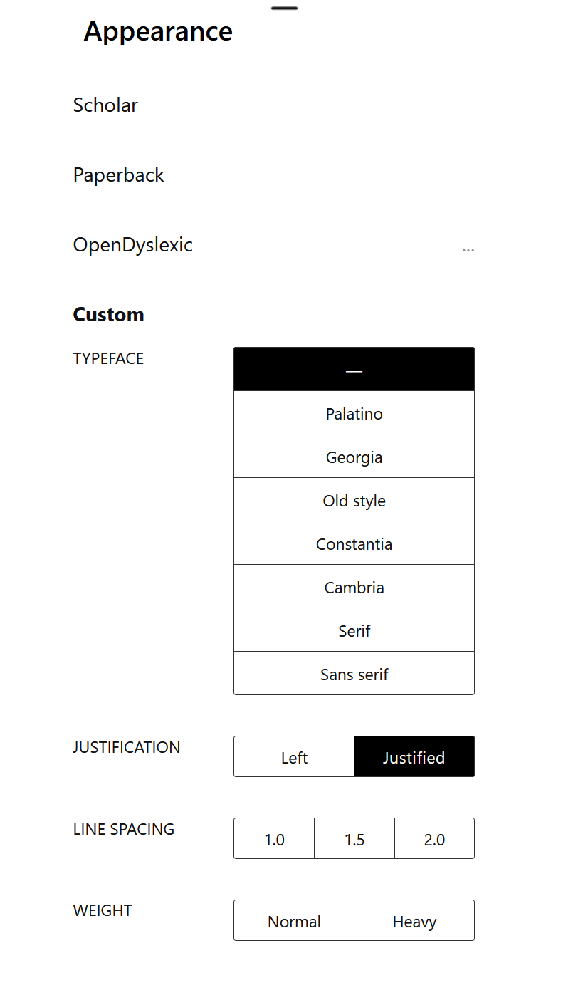

Hoopla is a library media streaming platform that allows patrons to digitally access their library's collections. It uses a "per circulation transaction model" which is unlike that of Libby and SimplyE in that there are a limited number of daily transactions that each library can allow.
Testing for Accessibility:
We explored different accessibility features and applied filters to determine the how accessible the software is.
Hoopla's app does not feature any accessibility options or tools for its home page, but it functions with a screen reader for all categories and buttons. The default UI features high contrast white on dark blue, although some of the text can be quite small and doesn't scale based off of phone text settings (Hoopla1 image) Some text is light gray on white, which can be difficult to read for people with vision impairments. After selecting a title, the text becomes much larger and easier to read.
After opening a book, the text defaults to a blue on white background (Hoopla2 image). A total of 15 different fonts can be selected, with each font having an additional bold option. The font list includes "dyslexic", which is weighted to help with readability for dyslexic people. Text size can also be adjusted on a sliding scale of 20 options. Unlike Libby and SimplyE, Hoopla offers four different color themes- white, light gray, dark, and sepia. All options feature high contrast for readability, and all function well with grayscale color settings. Line spacing, margin size, and text alignment can all be adjusted from three different options. Hoopla is also functional with screen readers.
Reviewing UI:
Reviewing aesthetic and graphic choices for consistently designed user interface.
Note: Hoopla also offers music and television, which have distinct interfaces from its ebook content, however, this analysis will not discuss these features to ensure consistency across various app testing.
Note: this portion of usability testing was conducted by a member of the team who accessed the app in their capacity as a Jersey City Free Public Library cardholder.
Font: The font used for menus and page content is easily readable. The same or a similar font is used for all content. Notably the selected font, is very similar, if not identical, to the fonts used as the default for other popular applications, such as spotify, and instagram.
Use of Graphics: The app uses a play button icon overlaid on ebooks in the user's “borrowed items” page to indicate that users can click on them to begin reading. Overall, the app used graphics such as a house for the home button, a gear for settings, and a heart icon for favorites, and a magnifying glass for search which are similar to icons used in social media apps, or in iOS. The app includes text descriptors for navigational options on navigational screens.
Consistency of Design: The app contains multiple collection carousels, which consistently must be swiped through to see further content. The navigation tools provided within ebooks, including scrolling options, the bookmark tool, etc., are consistent, regardless of the publisher of the resource. The app uses both an X icon and a back arrow icon to exit pages, inconsistently.
Use of Color: The app’s interface uses a limited color palette, displaying content in black, grey, white, and light blue, while content covers’ images are displayed in full color. Notably, when the app is viewed via a phone on “dark mode” light blue content, including category and return buttons, are not recolored, and are visually unattractive, and difficult to read on dark screens. The color blue is frequently used to indicate linked content, or additional pages, however, the color distinction is problematically the only visual indicator of linked content. Interestingly, the book rating option contained on each book’s page uses a pop containing yellow star emojis, a choice which is visually inconsistent with the rest of the application.
Additional Comments: The app features a carousel of collections on its homepage which moves between options extremely quickly. It was not possible to change this feature in the app. It was also not clear, except by trial and error that users could click on these banners to be directed to content. Notably, a pop up to rate hoopla the app appears whenever users borrow a new item. Significantly, it was not possible to change the visual appearance of the app in the app’s settings. However, the visual appearance of books could be modified while reading, to different brightness levels, and color themes, ie., exclusively black and white, dark mode, or sepia-tone pages, which differed from the sometimes colorful publisher default option. It is also impossible to remove a function from in-content page menu which indicates the remaining percent of the book or remaining number of pages in the chapter. Images within texts display in-line, and sized appropriately with text. They can also be clicked on and zoomed into, although image quality is low.
Overall Impressions: Overall, with some previously noted exceptions, the app provides users with an aesthetically consistent experience. The limited color palette and font used by the app may be appealing to some users, depending on their personal use and preferences. The aesthetic choices and graphics used by the app, such as the font choice, and the graphics utilized, such as the play icon and settings gear do not distinguish the app from other content and social media applications. For some users, this may be helpful, because the user interface may feel familiar to frequent app users. For others, the app’s aesthetic may not distinguish it as a tool specifically created for library content.
Reviewing UX:
Reviewing the user experience of the software and the design decisions that contributed.
Testing Across Devices:
Understanding how the software design is impacted when viewing on different devices such as mobile, tablet, or desktop.
Content Acquisition & Digital Rights Management:
Hoopla's title availability is managed based off of publisher availability, usage, library pricing, and requests from both libraries and their patrons. Hoopla's e-book service is based on a transactional model, where e-books will always be instantly available with no holds, and the publisher is paid every time a book is checked out. There are no complicated licenses, expirations, or platform fees, and libraries only pay for content that their users are actually accessing. In 2019, Hoopla expanded their service to include several different models to include metered and perpetual access models. Some content is protected only with DRM (digital rights management), HGCP (high-bandwidth digital content protection), or both.
Translation & Non-English Language Use:
Evaluation of translation and app usability in languages other than English
Note: This evaluation was conducted by a French-speaking member of the team, using e-book accounts to which they have access as a member of the Jersey City Free Public Library
Is it clear how to change language settings in the app? No
Is it possible to change language settings in the app, and if so, how? No
If a user’s phone has a default language other than English, will the text in the application’s interface be consistently written in the language of their choice? No - see next question.
Are all sections of the application’s content, including text for buttons or imported headings translated? Many of the collection headings, and key navigation buttons on Hoopla were translated, however, imperfectly. For example, the heading for the applications “popular music” collection was displayed in English. In particular, content which is imported to the application, likely from a publisher, such as book descriptions, is not translated, despite the phone’s overall language settings. Text on book pages which linked to different pages, providing collections, including “Foreign language” collections was not translated. For example, as part of each book’s informational page in Hoopla, the language the text is written in is explicitly stated. When looking at a french-language book’s page in the app, while the phone language settings are set to French, the language of the book will display as “French” as opposed to “Français”, which indicates that the translation software used by the phone does not recognize the link as a string of text requiring translation.
Does viewing the app in a language other than English impact the layout of the app’s user interface? No - the user interface’s layout and appearance adapted to longer strings of translated text without reducing content quality.
Are there foreign-language options for content in the app? (Note: the number of resources available on the e-reader applications surveyed is in part dependent on the library’s overall collection policies). Yes! Hoopla (accessed in Jersey City) provides a wide range of options for French speaking patrons.
Does searching for content in the application, actually yield options in the user’s language of choice? Yes, but imperfectly. When searching in the language of choice using thematic or subject terms, the app does provide resources written in the correct language. When searching by authors names, a language filter must be applied, in order to find content which has not been translated. Note that the author names used for this test were popular authors who wrote in the language of choice, and not initially in English. This can be easily done by applying a language filter in the search process. As part of each book’s informational page in Hoopla, the language the text is written in is explicitly stated. This text also provides a convenient link to the entirety of a specific language’s collection which is useful for browsing!
Overall Impressions: Overall the quality of the app’s translation is not evenly applied or consistent across the interface, however, the extensive collection of materials provided in Hoopla, makes it an intriguing choice for users. However, further testing by users or librarians speaking additional languages could provide a more holistic assessment of the app’s use for distinct populations.
Ease of Use:
Analyzing the ease of use of the software by conducting a set of specific tasks outlined below
Browse, select a book, and borrow it: When browsing it was immediately clear if the books were available, or if we would need to join a waitlist. It was possible to browse categories by genre, and to view star based reviews of each book, as well as to read synopses. One frustrating feature is that after conducting a search and selecting a book from the offered list, it is impossible to return to the search results page- the app returns users to an empty search bar, and they must re-do their search. It is easy to favorite interesting books. The borrow buttons on each book are prominently displayed and easy to find. Borrowed books are located in the somewhat vaguely titled “my hoopla” section of the menu.
Make a bookmark: In a book, users tap the bookmark icon in the top right corner. It is easy to accidentally unclick bookmarks on each page. Note- the list of bookmarks users make is nested within the table of contents section within books, which can be hard to find without exploring.
Close the app and return to the same page in a book: When users close the app on the page of a book and re-open the app, it is necessary to navigate across several pages back into the book, but the last page does come up. It is also possible to search the text using a keyword to find a specific part.
Try to find the app’s borrowing limit, and max it out: The borrowing limit policy in hoopla is dependent on the library’s agreement with the vendor. For some libraries, patrons have a set limit of books they can individually borrow each month. Once that limit is reached, they cannot borrow more materials until the next month, even if they return some items. At others, there is a set limit for the entire library; thus once the library hits its limit for the day, no more patrons can borrow materials. These stipulations can be confusing; for example hoopla will list patrons’ monthly borrowing limit, but does not clarify on its borrowing page that this limit includes returned items. Notably, hoopla does not allow users to sample text, thus this style of borrowing limit makes it unattractive for browsing users.
Return a Book: This function is easily accomplished by clicking the “return” button from the My hoopla page, or within borrowed books’ records. Books will also automatically return after the borrowing time limit is met.
Examine your data from previous borrowing and delete it: Borrowing history can be viewed by navigating to the bottom of the “Borrowed” page for materials. A full history page is clearly noted, and it is possible to edit and clear all data within this page. This option may be difficult to find for patrons who expect to find this option within app settings.
 


